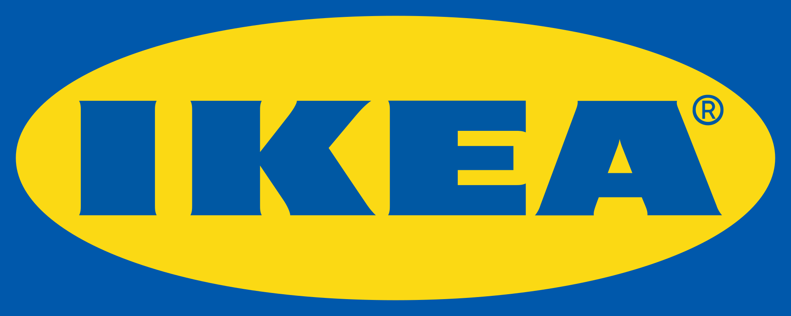
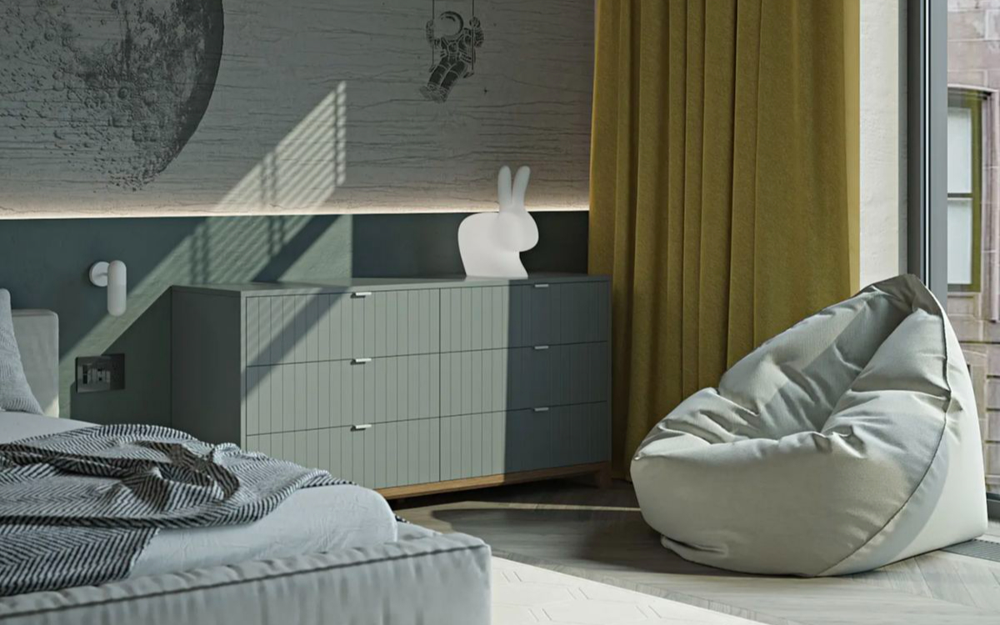
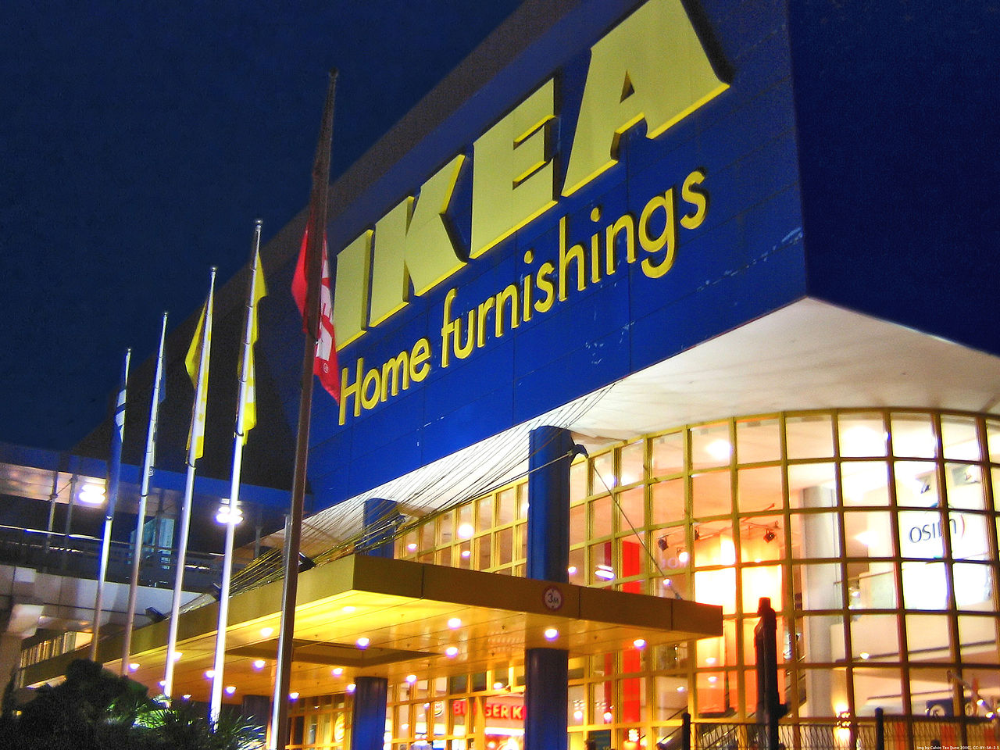

IKEA (ИКЕА) — основанная в Швеции нидерландская производственно-рознично торговая группа, одна из крупнейших в мире торговых сетей по продаже мебели и товаров для дома. Юридическое название — Ingka. Основана Ингваром Кампрадом в 1943 году.
История
Компания имеет шведские корни и поддерживает имидж шведской компании во всех маркетинговых коммуникациях. Основана в 1943 году в Швеции Ингваром Кампрадом.
Кампрад начал торговать, когда ему исполнилось 5 лет, когда купил спички оптом в Стокгольме и продал их в своей небольшой деревне в розницу; впоследствии разносил товары лично и посылал их по почте, тогда это были ручки, карандаши, кошельки, рамки. В 1948 году в ассортименте впервые появилась мебель, а уже в 1958 году открылся первый магазин ИКЕА в Швеции. Сеть магазинов стала разрастаться, в 1963 году ИКЕА вышла на международный рынок, начав с Норвегии.
Название «IKEA» является акронимом, и расшифровывается как «Ingvar Kamprad Elmtaryd Agunnaryd», то есть имя и фамилия основателя и название фермы Эльмтарюд в пригороде
Агуннарюд, где он родился.
Продажа торговой марки
1 января 2012 года IKEA осуществила внутреннюю перепродажу своего бренда за $11,2 млрд, причём продавцом выступила зарегистрированная в Лихтенштейне компания Interogo, подконтрольная Кампраду, а покупателем — дочерняя компания самой IKEA, голландская Ikea Systems. Целью сделки была названа «консолидация и упрощение структуры бизнес-группы», в прессе высказывались мнения, что значение сделки в том, что теперь торговая марка IKEA имеет вполне определённую стоимость. По версии Forbes, продажа бренда лихтенштейнской фирмой голландской компании по рыночной цене в данный момент была выгодна IKEA: оптовая торговля управляется из Швейцарии, а касса и управляющая компания расположены в Бельгии, в обеих странах налогообложение очень выгодное.Современная структура этой компании создана в 1982 году, основная цель, со слов Кампрада, — обезопасить фирму от раздробления или перепродажи последующими поколениями владельцев.

Собственники и руководство
IKEA принадлежит нидерландскому фонду Stichting INGKA Foundation (головная компания группы — голландская Ingka Holding B. V.).
Президент компании — Микаель Ольссон (Mikael Ohlsson). В списке богатейших людей мира, составленном журналом Forbes на 2008 год, основатель и совладелец IKEA Ингвар Кампрад (1926—2018) занимал седьмое место с состоянием $31 млрд.
До 24 мая 2017 генеральным директором компании являлся Петер Агнефьель. После него этот пост занял Еспер Бродин
Деятельность
1 января 2012 года IKEA осуществила внутреннюю перепродажу своего бренда за $11,2 млрд, причём продавцом выступила зарегистрированная в Лихтенштейне компания Interogo, подконтрольная Кампраду[4], а покупателем — дочерняя компания самой IKEA, голландская Ikea Systems. Целью сделки была названа «консолидация и упрощение структуры бизнес-группы», в прессе высказывались мнения, что значение сделки в том, что теперь торговая марка IKEA имеет вполне определённую стоимость. По версии Forbes, продажа бренда лихтенштейнской фирмой голландской компании по рыночной цене в данный момент была выгодна IKEA: оптовая торговля управляется из Швейцарии, а касса и управляющая компания расположены в Бельгии, в обеих странах налогообложение очень выгодное.
Современная структура этой компании создана в 1982 году, основная цель, со слов Кампрада, — обезопасить фирму от раздробления или перепродажи последующими поколениями владельцев[9].
Собственники и руководство
Страны, в которых находятся магазины IKEA:
Страны, в которых находятся магазины IKEA
Страны, в которых планируется открыть магазины IKEA
Закрытые магазины
Магазин IKEA в Сингапуре
IKEA принадлежит нидерландскому фонду Stichting INGKA Foundation (головная компания группы — голландская Ingka Holding B. V.).
Президент компании — Микаель Ольссон (Mikael Ohlsson). В списке богатейших людей мира, составленном журналом Forbes на 2008 год, основатель и совладелец IKEA Ингвар Кампрад (1926—2018) занимал седьмое место с состоянием $31 млрд[10].
До 24 мая 2017 генеральным директором компании являлся Петер Агнефьель. После него этот пост занял Еспер Бродин.
Деятельность
Компания IKEA занимается дизайном и реализацией мебели и сопутствующих товаров для дома, рассчитанных на массового потребителя. Концепция мебели ИКЕА состоит в том, что большую часть мебельного ассортимента покупатели собирают дома самостоятельно, также товары перевозятся в плоских коробках, тем самым снижаются затраты на логистику и сервис, что ведёт к более низкой стоимости товаров.
Сеть торговых центров компании насчитывала 231 магазин в 24 странах мира (на конец 2008 года), по большей части в Европе; 273 магазина в 25 странах мира (май 2010); с учётом магазинов, открытых на основе франчайзинга, сеть состоит из 325 магазинов в 41 стране мира (2013).
По состоянию на конец 2015 года общее число сотрудников IKEA — 142 600:
Европа: 107 400
Америка: 20 000
Азия и Австралия: 15 200
Общие продажи за 2015 финансовый год составили — €31,9 млрд и выросли на 11,2 % по сравнению с 2014 финансовым годом.
С октября 2014 года IKEA начала продавать в своих магазинах в Швеции страховые полисы одного из видов личного страхования — страхования по беременности и родам[[значимость факта?].
В феврале 2016 года компания запустила продажу мебели с беспроводной зарядкой
